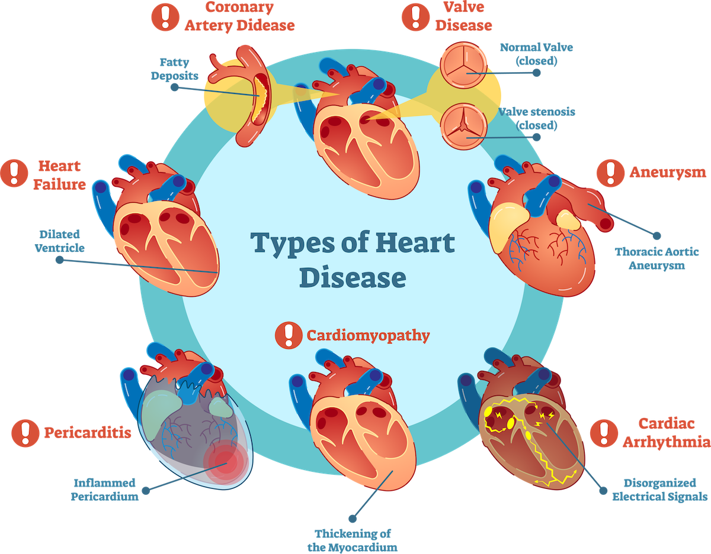

Heart disease is the leading cause of death in the United States, according to the Centers for Disease Control and Prevention (CDC)Trusted Source. In the United States, 1 in every 4 deaths in is the result of a heart disease. That’s about 610,000 people who die from the condition each year.
Heart disease doesn’t discriminate. It’s the leading cause of death for several populations, including white people, Hispanics, and Black people. Almost half of Americans are at risk for heart disease, and the numbers are rising. Learn more about the increase in heart disease rates.
Types of Heart Diseases
- Coronary Artery Disease (CAD)
- Heart Arrhythmias.
- Heart Failure.
- Heart Valve Disease.
- Pericardial Disease.
- Cardiomyopathy (Heart Muscle Disease)
- Congenital Heart Disease.
symptoms of Heart diseases
- Chest pain, chest tightness, chest pressure and chest discomfort (angina)
- Shortness of breath.
- Pain in the neck, jaw, throat, upper belly area or back.
- Pain, numbness, weakness or coldness in the legs or arms if the blood vessels in those body areas are narrowed.
Preventing skin disorders
- Aim for healthy blood pressure and cholesterol numbers
- Find ways to manage stress
- Embrace a healthier lifestyle
- medications you take
- your regular exercise routine
- your typical diet
- any family history of heart disease or stroke
- personal history of high blood pressure or diabetes
- any symptoms you’re experiencing, such as a racing heart, dizziness, or lack of energy
we need consult cardialogists
Medicines
- Benazepril (Lotensin)
- Captopril (Capoten)
- Enalapril (Vasotec)
- Fosinopril (Monopril)
- Lisinopril (Prinivil, Zestril)
- Moexipril (Univasc)
- Perindopril (Aceon)
- Quinapril (Accupril)napril (Accupril)
previous
next